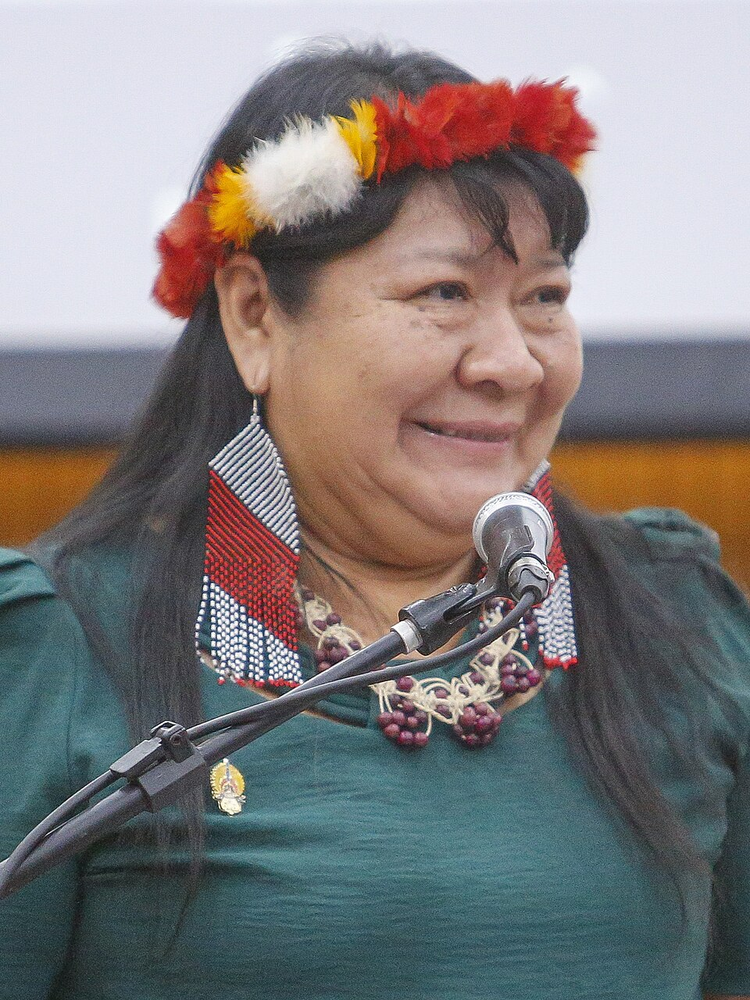
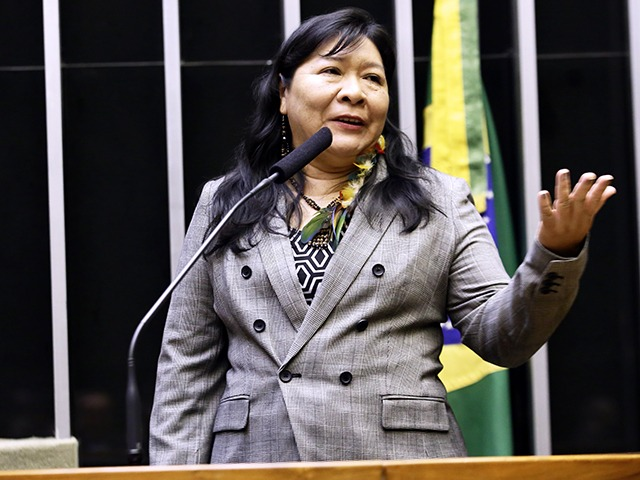
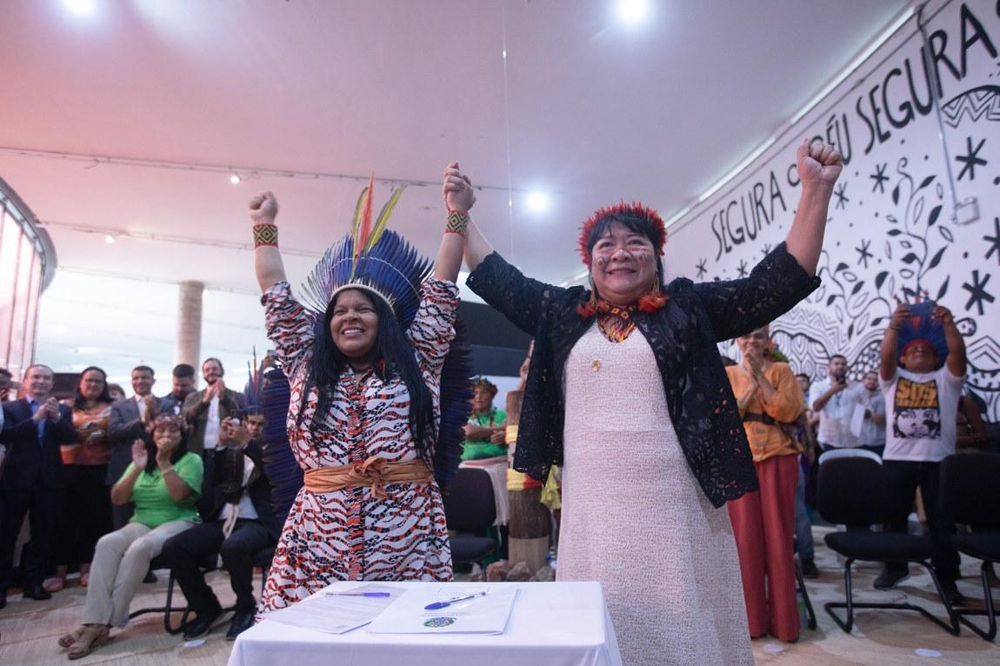
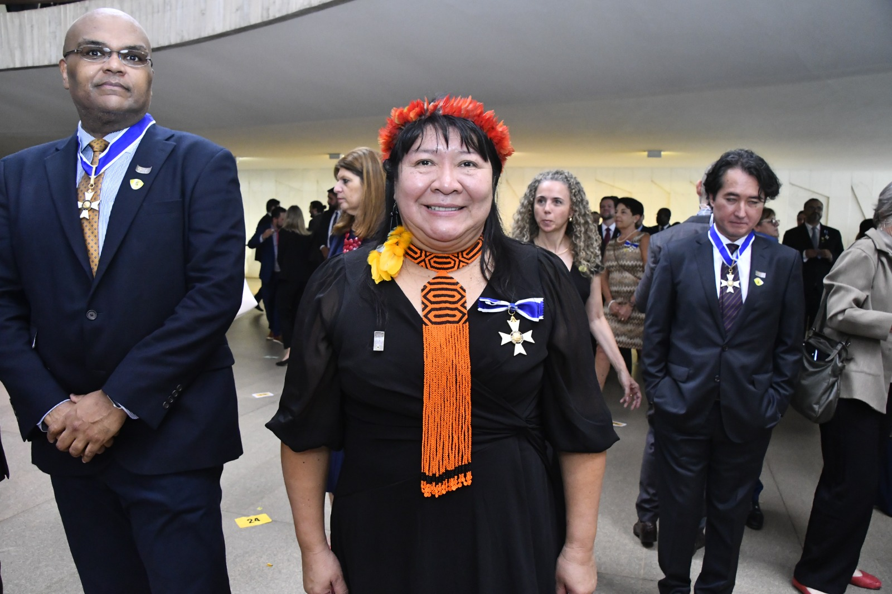

1973
Nasce em Boa Vista, Roraima, na comunidade indígena Truarú da Cabeceira, pertencente ao povo Wapichana. Desde cedo, sua trajetória é marcada pela vivência indígena, pela valorização da educação e pela relação com as lutas dos povos originários.

“ Posso ser a primeira deputada federal indígena no Brasil, mas não quero ser a única nem a última.”
Joenia Wapichana
Foto: Katie Maehler / Apib Comunicação, via Wikimedia Commons.
Trajetoria inicial: origens, formação e engajamento social

Foto: Ricardo Lima / TJPA, via Wikimedia Commons. (CC BY-SA 4.0)
Joenia Wapichana, nome pelo qual é conhecida Joenia Batista de Carvalho, nasceu em Roraima e pertence ao povo indígena Wapichana. Sua trajetória foi marcada desde cedo pela valorização da educação e pela vivência das lutas dos povos originários, especialmente em relação à defesa dos territórios, da cultura e dos direitos indígenas. Ao longo de sua formação, destacou-se nos estudos e tornou-se a primeira mulher indígena a se formar em Direito no Brasil, pela Universidade Federal de Roraima, em 1997. Posteriormente, aprofundou sua formação acadêmica no exterior, concluindo mestrado em Direito Internacional pela Universidade do Arizona, nos Estados Unidos, experiência que ampliou sua atuação na defesa dos direitos humanos e dos povos indígenas.
Nos seus primeiros engajamentos, Joenia aproximou-se diretamente do movimento indígena, atuando na defesa jurídica de comunidades e na luta pela demarcação de terras tradicionais, como no caso da Terra Indígena Raposa Serra do Sol. Sua atuação como advogada e liderança indígena abriu caminhos importantes em espaços historicamente ocupados por poucos representantes dos povos originários. Ao longo de sua trajetória, enfrentou desafios ligados ao preconceito, à exclusão política e à resistência contra os direitos indígenas. Ainda assim, consolidou-se como uma voz fundamental na defesa da democracia, do meio ambiente e dos povos indígenas no Brasil. Em 2018, tornou-se a primeira mulher indígena eleita deputada federal no país e, em 2023, assumiu a presidência da Fundação Nacional dos Povos Indígenas, tornando-se também a primeira mulher indígena a comandar a instituição.
Nasce em Boa Vista, Roraima, na comunidade indígena Truarú da Cabeceira, pertencente ao povo Wapichana. Desde cedo, sua trajetória é marcada pela vivência indígena, pela valorização da educação e pela relação com as lutas dos povos originários.
Ainda criança, muda-se com a mãe para a área urbana de Boa Vista, onde passa a estudar e a ter maior contato com a educação formal. Nesse período, começa a construir o caminho que mais tarde a levaria à atuação jurídica e política em defesa dos povos indígenas.
Forma-se em Direito pela Universidade Federal de Roraima, tornando-se a primeira mulher indígena a se formar em Direito no Brasil. Sua formação representa um marco importante para a presença indígena em espaços acadêmicos e jurídicos historicamente pouco acessíveis aos povos originários.
Passa a atuar como advogada na defesa dos direitos indígenas, especialmente em causas relacionadas à demarcação de terras e à proteção dos territórios tradicionais. Sua atuação ganha destaque nacional e internacional por levar denúncias de violações contra povos indígenas a espaços jurídicos importantes.
Leva uma causa indígena à Comissão Interamericana de Direitos Humanos da OEA, em Washington, denunciando violações cometidas contra povos originários no Brasil. Esse momento fortalece sua presença como liderança jurídica indígena em nível internacional.
Atua no caso da Terra Indígena Raposa Serra do Sol, uma das disputas mais importantes sobre demarcação de terras indígenas no Brasil. Em 2008, destaca-se como a primeira advogada indígena a fazer sustentação oral no Supremo Tribunal Federal. Em 2009, o STF confirma a demarcação da Terra Indígena Raposa Serra do Sol.
Conclui mestrado em Direito Internacional pela Universidade do Arizona, nos Estados Unidos. Essa formação amplia sua atuação na defesa dos direitos humanos, dos povos indígenas e das pautas socioambientais.
Na Ordem dos Advogados do Brasil, torna-se a primeira presidente da Comissão de Direitos dos Povos Indígenas. Esse cargo reforça sua importância na luta jurídica e institucional pelos direitos indígenas no país.
Eleita a primeira mulher indígena deputada federal no Brasil, representando o estado de Roraima. Sua eleição marca um avanço significativo para a representação dos povos indígenas na política nacional, ampliando a voz dos povos originários nos espaços de decisão.
Durante seu mandato como deputada federal, atua em defesa dos povos indígenas, do meio ambiente, da demarcação de terras e dos direitos humanos. Sua presença no Congresso Nacional amplia o debate sobre a participação dos povos originários nos espaços de decisão política.
Assume a presidência da Fundação Nacional dos Povos Indígenas, a Funai, tornando-se a primeira mulher indígena a comandar a instituição. Sua posse é considerada histórica por representar a ocupação de um órgão indígena por uma liderança originária com trajetória ligada diretamente à defesa desses povos.
Coragem intelectual, compromisso político e impacto coletivo.

Foto: Ricardo Stuckert / PR, via Wikimedia Commons.
Joenia Wapichana é uma mulher extraordinária porque sua trajetória representa resistência, pioneirismo e compromisso coletivo. Ela não se destacou apenas por conquistas individuais, mas por abrir caminhos para que os povos indígenas ocupassem espaços historicamente negados a eles. Ela foi a primeira mulher indígena formada em Direito no Brasil, mostrando a importância da educação como instrumento de luta e transformação social. Como advogada, atuou na defesa dos direitos dos povos originários, especialmente em causas ligadas à demarcação de terras e à proteção dos territórios indígenas.
Joenia também se tornou a primeira mulher indígena eleita deputada federal no Brasil, levando para o Congresso Nacional pautas como direitos indígenas, preservação ambiental, igualdade e justiça social. Sua presença na política brasileira é simbólica porque mostra que os povos indígenas não pertencem apenas ao passado, mas fazem parte do presente e do futuro do país. Além disso, ao assumir a presidência da Funai, tornou-se a primeira mulher indígena a comandar a instituição, reforçando a importância de que os próprios povos indígenas participem das decisões que afetam suas vidas, seus territórios e suas culturas. Por isso, Joenia é extraordinária: porque transformou sua história pessoal em uma luta coletiva, enfrentou preconceitos, rompeu barreiras e se tornou uma referência de coragem, representatividade e defesa dos direitos humanos no Brasil.
Influência sobre arte, política, educação e comunidades.
O legado de Joenia Wapichana é ter aberto caminhos para a presença indígena em espaços de poder, justiça e decisão no Brasil. Ela deixa como legado a representatividade indígena na política, pois mostrou que os povos originários devem participar diretamente das decisões que afetam seus territórios, suas culturas e seus direitos. Ao se tornar a primeira mulher indígena deputada federal, Joenia quebrou uma barreira histórica e inspirou outras lideranças indígenas, especialmente mulheres, a ocuparem também esses espaços. Outro legado importante é sua atuação na defesa jurídica dos povos indígenas. Como advogada, ela ajudou a fortalecer a luta pela demarcação de terras e pela proteção dos territórios tradicionais, como no caso da Terra Indígena Raposa Serra do Sol. Sua trajetória mostra que o Direito pode ser usado como ferramenta de resistência e justiça social.
Joenia também deixa um legado na defesa do meio ambiente, pois sua atuação sempre esteve ligada à proteção da Amazônia, das florestas e dos modos de vida tradicionais. Ela reforça a ideia de que proteger os povos indígenas também é proteger a natureza e o futuro do país. Em resumo, o legado de Joenia Wapichana é o de uma mulher que transformou sua trajetória em luta coletiva, fortaleceu a voz dos povos indígenas e mostrou que representatividade, justiça e preservação ambiental caminham juntas.
Fotos e documentos representativos.

Joênia Wapichana durante sua atuação como deputada federal, marco da representatividade indígena na política brasileira após sua eleição histórica em 2018.
Foto: Página da Câmara dos Deputados sobre Joênia Wapichana.

Cerimônia de posse de Joênia Wapichana como presidenta da Funai, momento histórico que marcou a chegada da primeira mulher indígena ao comando da instituição.
Foto: Joedson Alves/Agência Brasil, via Funai.

Joênia Wapichana recebe a condecoração da Ordem de Rio Branco, reconhecimento nacional por sua trajetória na defesa dos direitos dos povos indígenas.
Foto: Funai/Gov.br.
Fontes, artigos e documentos sobre a trajetória de Joênia Wapichana.
Matéria oficial sobre a posse de Joênia Wapichana como primeira indígena a presidir a Funai. Link: https://www.gov.br/funai/pt-br/assuntos/noticias/2023/primeira-indigena-a-presidir-a-funai-joenia-wapichana-toma-posse-em-cerimonia-historica-prestigiada-por-liderancas-autoridades-e-sociedade-civil
Página institucional com informações sobre sua atuação como deputada federal e sua importância para a representatividade indígena na política. Link: https://www.camara.leg.br/deputados/204464
Reportagem sobre a eleição histórica de Joênia Wapichana como primeira mulher indígena deputada federal do Brasil. Link: https://www.camara.leg.br/noticias/546065-primeira-deputada-indigena-eleita-tem-como-prioridade-a-defesa-da-inclusao-e-da-sustentabilidade/
Informações sobre o julgamento da Terra Indígena Raposa Serra do Sol, caso histórico em que Joênia Wapichana atuou na defesa dos direitos territoriais indígenas. Link: https://portal.stf.jus.br/noticias/verNoticiaDetalhe.asp?idConteudo=106578
Matéria sobre o reconhecimento internacional de Joênia Wapichana por sua atuação na defesa dos direitos humanos e dos povos indígenas. Link: https://brasil.un.org/pt-br/81439-ind%C3%ADgena-brasileira-vence-pr%C3%AAmio-de-direitos-humanos-das-na%C3%A7%C3%B5es-unidas
Artigo com visão geral sobre sua vida, formação, atuação política, carreira jurídica e trajetória na defesa dos povos originários. Link: https://pt.wikipedia.org/wiki/Jo%C3%AAnia_Wapichana
Conheça outras trajetórias marcantes da luta por justiça e transformação social.

Foto: John Mathew Smith / www.celebrity-photos.com, via Wikimedia Commons.
Simbolo da luta contra a segregação racial nos Estados Unidos e referência mundial em coragem civil.
Saiba mais
Imagem: representação de Bartolina Sisa em cédula boliviana — via Banco Central da Bolívia.
Estrategista quilombola cuja resistência ajudou a marcar a luta negra por liberdade no Brasil lorem.
Saiba mais
Imagem: representação de Bartolina Sisa em cédula boliviana — via Banco Central da Bolívia.
Intelectual fundamental para os debates sobre feminismo negro, cultura e desigualdade racial no Brasil.
Saiba mais
Imagem: representação de Bartolina Sisa em cédula boliviana — via Banco Central da Bolívia.
Liderença indigêna e jurista que ampliou a presença dos povos originários nos espaços de decisão.
Saiba mais